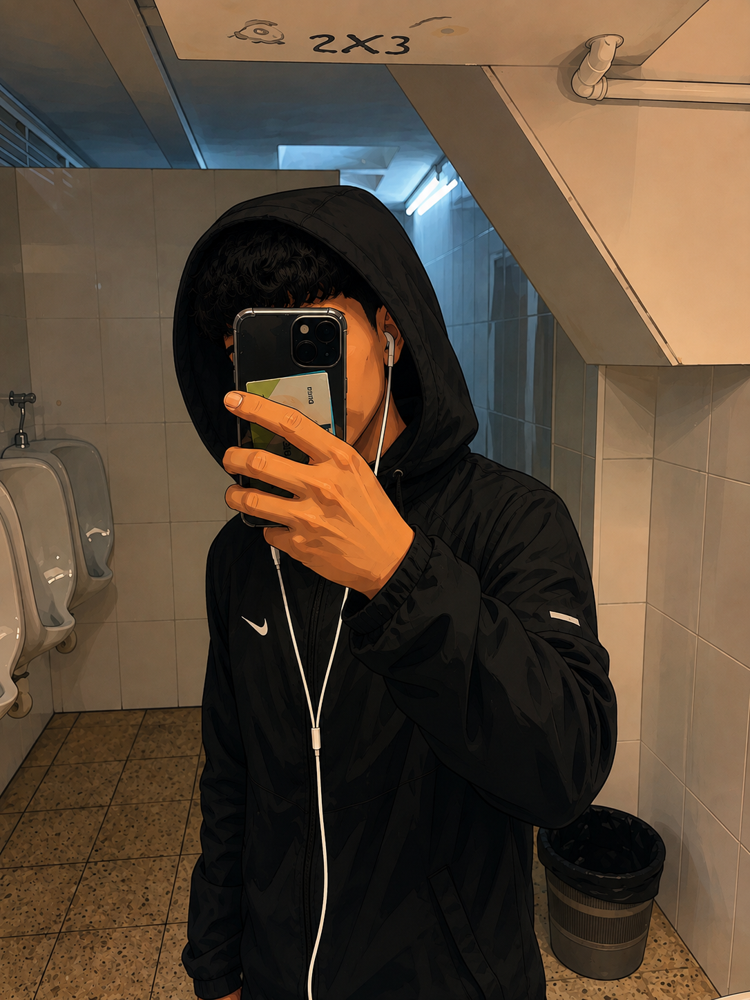

Nombre: Alex Orellana
Fecha de nacimiento: 27-01-2009, 17 años
Vida académica: He estudiado la ESO en Ins Can Peixauet y me fui a estudiar un grado medio de Sistemas macroinformaticos y redes, en FPllefià.
Futuro: Me gustaría sacarme un título de grado superior en este centro, necesito esforzarme y darle la oportunidad a mi madre de que vea que ha valido la pena lo que ha hecho mi madre ella sola.
Quiero que valga la pena y que vea que soy un chico con buenas intenciones, que soy un chico tranquilo que su unica preocupación al salir de casa es llevarse sus auriculares y ir solo por la calle con su música :/
